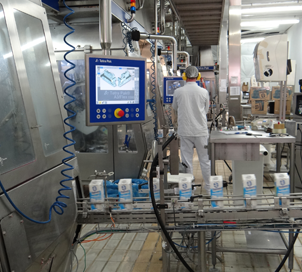
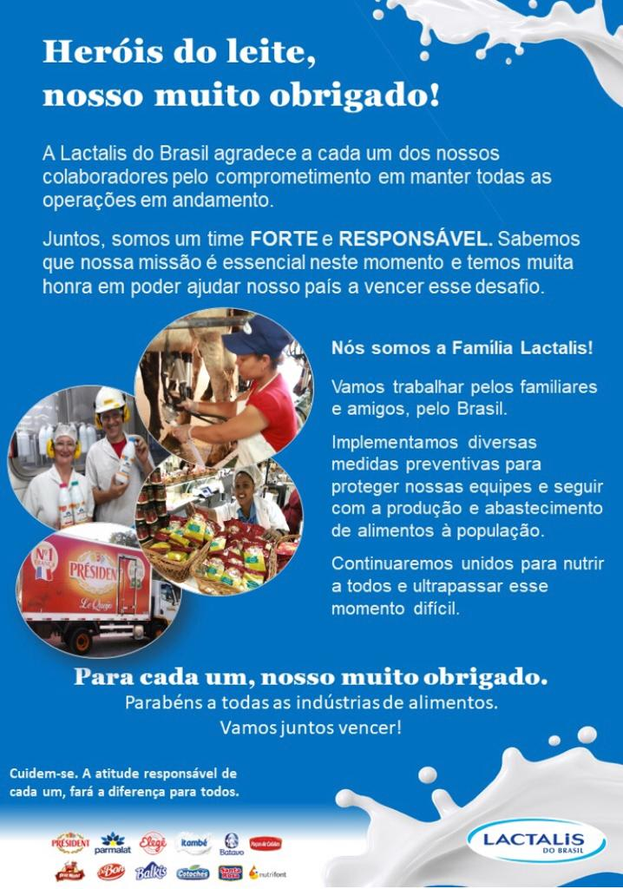
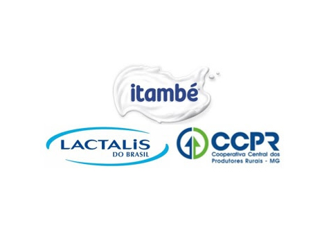
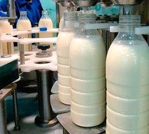
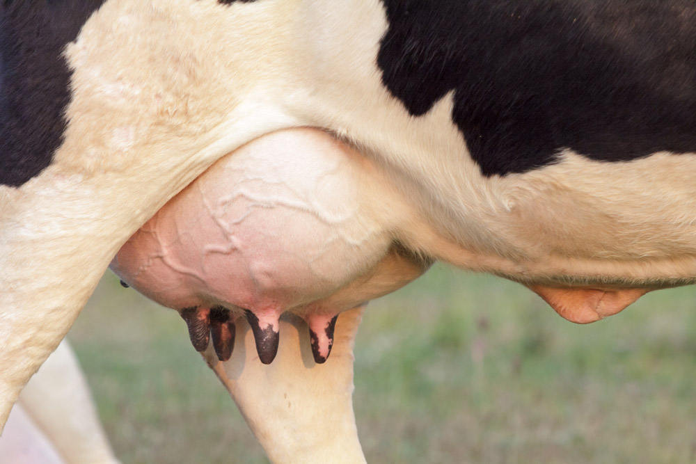
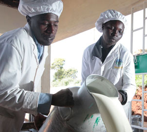

A Lactalis do Brasil está lançando sua conta institucional no Instagram. O perfil @lactalisdobrasil surge como uma plataforma para aproximar consumidores, mais de oito mil colaboradores e milhares de produtores rurais que entregam seu leite todos os dias para a empresa. Segundo o diretor de comunicação externa da Lactalis, Guilherme Portella, o novo canal é […]
Notícias
Releases
06/04/20
// Press Releases
Lactalis lança conta oficial no Instagram
02/04/20
// Press Releases
Colaboradores da Lactalis fazem campanha pelo #fiqueemcasa
A Lactalis do Brasil lançou, nesta quarta-feira (1/04), a campanha #HeróisLactalis, projeto que visa valorizar seus produtores de leite, funcionários, transportadores e fornecedores que estão trabalhando para manter a oferta de lácteos garantida à população. A ação ocorre em emissoras de rádio de 17 cidades em sete estados brasileiros. “A ideia é valorizar as comunidades […]
22/03/20
// Press Releases
Heróis Lactalis
A Lactalis do Brasil agradece ao empenho de todos os seus colaboradores por manter a continuidade de suas operações no país diante da pandemia da Covid-19.
02/08/19
// Press Releases
Lactalis do Brasil concretiza parceria estratégica com a CCPR/Itambé e se torna a maior empresa de lácteos do país
A Lactalis do Brasil e a CCPR (Cooperativa Central dos Produtores Rurais de Minas Gerais) concretizaram, no dia 10 de julho, a parceria estratégica que cria a líder nacional em produtos lácteos. Como parte do acordo, a Lactalis concluiu, nesta data, a aquisição de 100% do capital da Itambé. A CCPR, por sua vez, garantiu um […]
15/07/19
// Releases
Crescimento da Lactalis no Brasil
A Lactalis, empresa familiar de origem francesa, atua em mais de 90 países e há 85 anos vem construindo sua trajetória em torno do leite. Estamos no Brasil há pouco mais de 4 anos, e desde então atuamos em todo o país com uma completa linha de produtos lácteos de grandes marcas como President, Parmalat, […]
03/01/19
// Releases
Como controlar e prevenir a mastite?
Apontada por produtores e técnicos como a doença que mais causa prejuízos à pecuária leiteira, a mastite é uma inflamação das glândulas mamárias das vacas geralmente resultante da ação de bactérias. Além de reduzir a produção de leite, pode levar ao descarte e até à morte do animal. De acordo com Liz Onofri Cangussú, especialista da área […]
07/12/18
// Releases
Oportunidades e desafios pela frente
O Brasil dá início a um novo ano com desafios para o setor lácteo. Em 2019, é preciso implementar iniciativas para que as tão almejadas estabilidade e rentabilidade possam, enfim, se estabelecer e garantir tranquilidade à cadeia produtiva que todos os dias leva alimento de qualidade à mesa dos brasileiros. Seguiremos trabalhando para solucionar os […]
04/12/18
// Releases
Práticas de manejo de forrageiras garantem maior produção de leite
A importância da correção do solo e da utilização de técnicas adequadas de plantio são medidas essenciais para o manejo das forrageiras.
20/11/18
// Press Releases
Lactalis produz leite UHT em garrafas e manteiga com a verdadeira receita francesa no RS
O Grupo Lactalis deu início, em 2018, à fabricação de leite UHT das marcas Parmalat e Elegê envasado em garrafas.
27/10/18
// Press Releases
Lactalis do Brasil é Empresa Amiga da Justiça
A Lactalis do Brasil formalizou seu ingresso no Programa Empresa Amiga da Justiça, iniciativa do Tribunal de Justiça de São Paulo (TJSP).
31/08/18
// Releases
Manejo adequado resulta em leite de maior qualidade
A ocorrência de mastite nos rebanhos impacta significativamente a rentabilidade das propriedades no Estado.
04/07/18
// Releases
Lactalis doa 2.700 litros de leite UHT a três entidades assistências de Porto Alegre
A Lactalis do Brasil realizou, em junho de 2018,a doação de 2.700 litros de leite UHT da marca Parmalat a três entidades assistenciais de Porto Alegre.
11/09/17
// Releases
Lactalis investe em fornecedores no país
A francesa Lactalis pretende ampliar em 30% a produtividade nas propriedades que entregam leite para a companhia no Brasil.
CONTATO
Assessoria de Imprensa - Jardine Agência de Comunicação
RELACOES COM A IMPRENSA LACTALIS DO BRASIL
reportagem@jardinecomunicacao.com.br
+55 (51) 3224 01 04
Lactalis lança conta oficial no Instagram
06/04/20

A Lactalis do Brasil está lançando sua conta institucional no Instagram. O perfil @lactalisdobrasil surge como uma plataforma para aproximar consumidores, mais de oito mil colaboradores e milhares de produtores rurais que entregam seu leite todos os dias para a empresa.
Segundo o diretor de comunicação externa da Lactalis, Guilherme Portella, o novo canal é uma oportunidade para reforçar os valores do grupo. “É uma plataforma importante para otimizar a comunicação da Lactalis no Brasil, especialmente com nossos colaboradores, consumidores, clientes e produtores de leite. Ela soma-se aos demais canais já existentes, inclusive ao Instagram das marcas de consumo e Clube do Produtor, que juntos, pretendem valorizar nossa atuação como líder setorial forte e responsável e o nosso papel na alimentação da população brasileira”, afirma.
O Instagram trará, em uma linguagem simples, informações sobre a fabricação de centenas de produtos, receitas, dicas e curiosidades sobre a produção de leite no campo. Siga @lactalisdobrasil no Instagram e fique por dentro das novidades dessa empresa familiar que se tornou a líder na produção de laticínios no Brasil e no mundo e segue fabricando seus produtos com o mesmo cuidado e afeto de sempre.
Colaboradores da Lactalis fazem campanha pelo #fiqueemcasa
02/04/20
 lactalis
A Lactalis do Brasil lançou, nesta quarta-feira (1/04), a campanha #HeróisLactalis, projeto que visa valorizar seus produtores de leite, funcionários, transportadores e fornecedores que estão trabalhando para manter a oferta de lácteos garantida à população. A ação ocorre em emissoras de rádio de 17 cidades em sete estados brasileiros. “A ideia é valorizar as comunidades e as pessoas que fazem a diferença neste momento, nossos heróis da produção”, diz o diretor de comunicação externa, Guilherme Portella.
Os spots de rádio foram feitos com a ajuda dos próprios colaboradores que gravaram mensagens de estímulo e apoio às suas comunidades pedindo pelo #fiqueemcasa. O projeto contou com a colaboração dos times das unidades de Teutônia (RS), Ijuí (RS), Três de Maio (RS), Santa Rosa (RS), Bom Conselho (PE), Itumbiara (GO), Goiânia (GO), Concórdia (SC), Carambeí (PR), Ravena (MG), Uberlândia (MG), Guanhães (MG), Sete Lagoas (MG), Pará de Minas (MG), Pouso Alto (MG), Antônio Carlos (MG) e Aracanguá (SP).
A campanha #HeróisLactalis será veiculada nas regionais de fábricas e centros de distribuição das marcas Elegê, Itambé, Parmalat e Batavo, quatro das principais linhas de produtos da Lactalis do Brasil. Nos áudios que irão ao ar a partir desta quarta-feira por três meses, a Lactalis reforça os cuidados tomados com seus colaboradores durante o período de quarentena. “A indústria de alimentos tem um papel social importantíssimo nesse momento e, por isso, os Heróis da Produção não podem parar. E para que eles possam trabalhar com mais tranquilidade, a empresa adotou uma série de medidas extras de proteção”, informou Portella. De acordo com o executivo, manter as fábricas operando neste momento é uma ação de segurança alimentar e colaboração social.
Foto: Carolina Jardine
Heróis Lactalis
22/03/20
 A Lactalis do Brasil agradece ao empenho de todos os seus colaboradores por manter a continuidade de suas operações no país diante da pandemia da Covid-19.
Lactalis do Brasil concretiza parceria estratégica com a CCPR/Itambé e se torna a maior empresa de lácteos do país
02/08/19
 lac
A Lactalis do Brasil e a CCPR (Cooperativa Central dos Produtores Rurais de Minas Gerais) concretizaram, no dia 10 de julho, a parceria estratégica que cria a líder nacional em produtos lácteos.
Como parte do acordo, a Lactalis concluiu, nesta data, a aquisição de 100% do capital da Itambé. A CCPR, por sua vez, garantiu um contrato de fornecimento de leite de longo-prazo, mirando o crescimento sustentado das bacias leiteiras de Minas Gerais e Goiás.
A união de Lactalis e Itambé cria uma verdadeira potência no mercado nacional: faturamento de quase R$ 8 bilhões, processamento de 2,3 bilhões de litros de leite por ano (o que corresponde a 9,4% da produção formal Brasileiro), e um portfólio de marcas e produtos que estão no coração e na mesa do consumidor brasileiro. Para o grupo francês, líder mundial em produtos lácteos, o Brasil passa a ser a quinta maior operação, reforçando o comprometimento e otimismo com o país.
A parceria entre CCPR e Lactalis vai além. No campo, ambas trabalham para elevar o leite brasileiro aos melhores padrões mundiais de qualidade e produtividade. Para isso, investem significativamente em programas de apoio e desenvolvimento para o produtor, assistência técnica, fornecimento de insumos, serviços, tecnologia e logística. Destaca-se também a complementariedade de atuação nas duas bacias leiteiras mais importantes do país: CCPR é líder de captação em Minas Gerais e Lactalis é importantíssima no Sul. Como as regiões têm picos de safra em momentos distintos, há oportunidades de otimização em toda a cadeia, beneficiando produtores e consumidores.
“A Lactalis tem como visão valorizar as marcas que adquire, maximizando a capacidade produtiva e buscando oportunidades de sinergia para o crescimento do negócio. Com a aquisição da Itambé, praticamente dobramos a nossa presença no Brasil. Além disso, ganhamos com toda a expertise desenvolvida pela empresa ao longo da sua história. Por isso, a Itambé segue com gestão independente baseada em Minas Gerais, próxima de seus consumidores e fornecedores”, afirma Patrick Sauvageot, CEO da Lactalis para a América Latina. “No nosso setor, produtos ótimos exigem leite ótimo. Ao passo em que as exigências dos consumidores avançam e mais investimentos são necessários no campo, nossa posição é de grande vantagem”, completa.
“A CCPR criou e conduziu a Itambé ao longo dos seus primeiros 70 anos de vida. Mas, para garantir a tranquilidade do nosso produtor pelas próximas décadas, precisávamos escolher um parceiro forte e com experiência no relacionamento com cooperativas, o que é algo bastante importante. Nossa opção pela Lactalis se deu muito em função das relações de sucesso que ela estabeleceu com produtores de todos os tamanhos, em várias regiões do planeta. Nossas origens e valores são muito similares”, explica Marcelo Candiotto, presidente da CCPR. “Nosso acordo traz o melhor de dois mundos. De um lado, a certeza de que a Itambé continuará a crescer num mercado cada vez mais consolidado e competitivo. De outro, a tranquilidade de termos um contrato de fornecimento exclusivo e de longo prazo, que valoriza nosso leite e nosso produtor. Daqui para frente, a CCPR se concentrará na captação e apoio ao campo, enquanto a Itambé focará no desenvolvimento e fabricação dos melhores produtos, de Minas e Goiás para o Brasil todo”, conclui.
A concretização do negócio se tornou possível em decorrência de um acordo firmado globalmente entre o grupo Lactalis e o grupo Lala, que resolve em definitivo a transferência da Itambé para a multinacional francesa.
Crescimento da Lactalis no Brasil
15/07/19
 dica4
A Lactalis, empresa familiar de origem francesa, atua em mais de 90 países e há 85 anos vem construindo sua trajetória em torno do leite.
Estamos no Brasil há pouco mais de 4 anos, e desde então atuamos em todo o país com uma completa linha de produtos lácteos de grandes marcas como President, Parmalat, Batavo, Elegê, Cotochés, Poços de Caldas, entre outras.
Seguindo nossa trajetória de consolidação no Brasil, temos a satisfação de anunciar aos nossos produtores que concretizamos na quarta-feira, 10 de julho, a compra da Itambé Alimentos S.A. Essa aquisição nos torna a maior empresa do setor de lácteos do país e a maior captadora de leite do Brasil.
Juntas, as empresas terão forte presença nas bacias leiteiras do Sul e Sudeste, gerando uma complementariedade geográfica importante para o negócio.
Apaixonados por leite, assim como nós, há 70 anos a Itambé desenvolve seus negócios pautada na qualidade, na tradição e no apoio para o desenvolvimento agropecuário. A empresa chega ao grupo para fortalecer nossa missão histórica de abrir o mundo para o melhor do leite, levando qualidade, sabor e produtos inovadores para milhares de pessoas.
No campo, a captação da Itambé será feita pela Cooperativa dos Produtores Rurais de Minas Gerais – CCPR e a operação da Lactalis seguirá de forma independente. Com isso, reafirmamos o nosso trabalho e compromisso com você, produtor, para que juntos possamos continuar no caminho do crescimento e fortalecimento da cadeia produtiva do leite no país.
Vamos em frente!

Como controlar e prevenir a mastite?
03/01/19
 Istock
Apontada por produtores e técnicos como a doença que mais causa prejuízos à pecuária leiteira, a mastite é uma inflamação das glândulas mamárias das vacas geralmente resultante da ação de bactérias. Além de reduzir a produção de leite, pode levar ao descarte e até à morte do animal. De acordo com Liz Onofri Cangussú, especialista da área de Desenvolvimento de Projetos Agropecuários da Lactalis, o problema está ligado a fatores ambientais e ao manejo inadequado. Nesta entrevista, ela ensina como identificar a enfermidade e controla-la.
Quais são as doenças e os problemas mais comuns nas glândulas mamárias das vacas?
Liz Onofri Cangussú – A doença que mais se destaca, tanto pela incidência quanto pelo prejuízo causado, é a mastite (ou mamite, dependendo da região do Brasil). É caracterizada pelo processo inflamatório da glândula mamária causado, na maior parte das vezes, por bactérias. Os tetos podem também apresentar lesões, como o prolapso de esfíncter (hiperqueratose). isso, por comprometer a integridade dos tetos, o que pode aumentar as chances de ocorrência de mastites.
Quais são as raças bovinas leiteiras que sofrem maior incidência de mastite e em qual período as vacas estão mais sujeitas? Liz – Essa correlação (com as raças) não existe. A incidência está diretamente relacionada ao manejo e à ambiência (qualidade do ambiente onde os animais vivem). As vacas podem apresentar mastite ao longo de toda a sua vida produtiva, mas o período em que estão mais suscetíveis é no início da lactação.
Existe alguma relação entre o tipo de propriedade ou sistema produtivo e a incidência de mastite?
Liz – Sistemas de produção a pasto têm maior incidência de mastite durante o período chuvoso. A presença de barro predispõe à contaminação da glândula mamária. Sendo
assim, animais confinados tendem a ter menor incidência de mastite, justamente por não sofrerem com os impactos do período chuvoso.
Que situações podem causar alterações na integridade dos tetos? Liz – A sobreordenha, ou seja, continuar ordenhando o teto mesmo que o leite já tenha acabado, é um dos fatores que afeta a integridade dos tetos. O vácuo desregulado também agride os tetos, assim como teteiras velhas. É fundamental que seja realizada a manutenção periódica da ordenhadeira, com aferição e regulagem do nível de vácuo e substituição de teteiras.
Como identificar a mastite: quais são os sintomas e como fazer o diagnóstico?
Liz – As mastites são classificadas por seus sintomas como clínica ou subclínica, ou pelo micro-organismo causador como contagiosa ou ambiental. O principal sinal para a identificação da mastite clínica é a presença de grumos no teste da caneca de fundo preto, podendo estar acompanhada de outros sintomas, como inchaço, dor e vermelhidão, além da queda na produção.A mastite subclínica, embora não tenha sinais tão evidentes, provoca quedas na produção e pode predispor à evolução para uma mastite clínica, em que as perdas são ainda maiores. A detecção da mastite subclínica pode ser realizada através do CMT, um teste rápido, fácil e barato, ou através do controle leiteiro (CCS individual), que permite conhecer de forma mais precisa a saúde do úbere de cada vaca.
Como se faz o controle e a prevenção?
Liz – O controle da mastite é realizado através do tratamento dos casos clínicos e descarte dos casos crônicos (animais que tenham quadros clínicos recorrentes e não respondem aos tratamentos). É possível fazer uma boa prevenção ao disponibilizar um local seco e limpo para as vacas repousarem; realizar um correto tratamento de vaca seca; ordenhar por último os animais com mastite subclínica; garantir o funcionamento e a higienização adequada dos equipamentos de ordenha, entre vários outros pontos que podem ser avaliados e adequados de acordo com a necessidade de cada fazenda.
Uma vez detectada a mastite, como tratar o problema e evitar que se espalhe pelo rebanho, afetando um número cada vez maior de vacas?
Liz – O tratamento dos casos clínicos é realizado através de antibiótico intramamário e, dependendo dos demais sintomas, pode ser associado a outros antibióticos e anti- inflamatórios. É necessário descartar todo o leite produzido pela vaca durante os períodos de tratamento e de carência dos medicamentos, pois este está contaminado por resíduos de antibiótico. Obedeça ao período de carência, inclusive, em tratamentos com antibióticos utilizados no momento da secagem. Caso haja dúvida sobre se o leite está contaminado, entre em contato com o seu técnico de captação, ele pode auxiliar. As medidas preventivas apresentadas devem ser adotadas. A implantação do sistema de linha de ordenha auxilia no controle da disseminação da mastite. Essa prática consiste em ordenhar por último as vacas infectadas a fim de evitar novas contaminações.
Existem estimativas sobre as perdas em decorrência de mastites?
Liz – Além do custo do tratamento de uma mastite (antibiótico e descarte de leite), é possível estimar a saúde da glândula mamária pelo resultado de CCS (contagem de células somáticas), tanto do tanque quanto por vaca. A tabela (veja abaixo) é bastante difundida e representativa da realidade.
Oportunidades e desafios pela frente
07/12/18
 dica3
O Brasil dá início a um novo ano com desafios para o setor lácteo. Em 2019, é preciso implementar iniciativas para que as tão almejadas estabilidade e rentabilidade possam, enfim, se estabelecer e garantir tranquilidade à cadeia produtiva que todos os dias leva alimento de qualidade à mesa dos brasileiros. Seguiremos trabalhando para solucionar os problemas do setor. Acreditamos que, resolvendo alguns entraves, seremos um país mais competitivo em leite e poderemos exportar nossos produtos para dezenas de destinos.
Ao lado da Lactalis, os produtores vêm, mês a mês, aprimorando processos nos tambos e adaptando seus níveis de qualidade aos parâmetros que, em breve, estarão em vigor com a nova instrução normativa que regula CCS e CBT. Um processo que é construído a muitas mãos e que tem apoio fantástico de uma equipe de campo de centenas de técnicos em todo o Brasil. Afinal, temos um time que dá orgulho de ver.
Ao lado do produtor, a Lactalis presta orientação técnica e vem mudando a realidade em diversas propriedades. Transformação simples que, em muitos casos, não exige grande investimento, mas sim um repensar de processos. Esse trabalho já foi feito com mais de 2 mil produtores que aderiram ao Lactaleite e, em 2019, deve ganhar mais adeptos.
Seja você também um produtor de leite diferenciado, aumente seus lucros e torne a produção leiteira um projeto para o futuro da sua família. Para saber mais sobre esse e outros programas que a Lactalis está implementando, basta acessar o site www. lactalisdobrasil.com.br, um portal novinho e cheio de informações para melhorar a vida tanto do produtor quanto do consumidor. Nesse novo canal você encontrará dicas técnicas, notícias, receitas e muitas outras informações essenciais para mudar o seu dia a dia.
A Lactalis do Brasil acredita num futuro promissor com seus produtores. É certo que teremos novos desafios em 2019. A questão essencial é como iremos enfrenta-los. Temos a convicção de que é preciso transformar problemas em oportunidades, fazer o que já se faz melhor ainda, achar no problema a mola para a superação e o sucesso. Que 2019 seja um ano de muitos desafios, porque nós estamos preparados para eles! Boas Festas! –
André Salles – CEO da Lactalis do Brasil
Práticas de manejo de forrageiras garantem maior produção de leite
04/12/18

Crédito: Leticia Szczesny
A importância da correção do solo e da utilização de técnicas adequadas de plantio são medidas essenciais para o manejo das forrageiras. O assunto foi abordado junto aos produtores durante palestra na sede da Lactalis do Brasil, na Expointer. Na ocasião, Carlos Augusto Feldmann, responsável pelo desenvolvimento comercial da Atlântica Sementes, apresentou aos criadores práticas para manter o plantio no verão sem ter consequências negativas na produção. “Como costumo dizer, eu trabalho com um tripé, onde existe genética, manejo e pastejo. Se faltar um desses, não adianta comprar uma vaca cara e levar para propriedade”, disse.
De acordo com Feldmann, uma forrageira de qualidade garante aumento da produção de leite. “É de suma importância, pois um bom alimento sempre se reflete na produção”, destacou. O palestrante também ressaltou que é essencial que o produtor saiba a hora certa de colocar e retirar o gado do pastoreio e utilize sempre a semente correta, que deve ser semeada com profundidade de dois a quatro centímetros e na temperatura ideal para que possa germinar. “São vários fatores que determinam o sucesso na produção de leite”, pontuou.
Lactalis produz leite UHT em garrafas e manteiga com a verdadeira receita francesa no RS
20/11/18

Crédito: Leticia Szczesny
O Grupo Lactalis deu início, em 2018, à fabricação de leite UHT das marcas Parmalat e Elegê envasado em garrafas. Os produtos sairão da nova linha da unidade de Teutônia, no Rio Grande do Sul. Tendência no mercado europeu, as embalagens representam apenas 2,2% do volume de leite comercializado no Brasil. Em seu pronunciamento, o governador destacou que o projeto consolidado hoje é resultado de uma parceria iniciada no começo de sua gestão. “O amanhã depende do que estivermos realizando hoje”, frisou, elogiando a iniciativa da Lactalis e lembrando que mais empresas precisam seguir esse exemplo e investir no RS.
Para adaptar a fábrica de Teutônia, a Lactalis investiu R$ 50 milhões em equipamentos para produção de leite UHT em garrafas e R$ 20 milhões para a linha de manteiga premium, muitos deles importados da Europa. O processo durou 12 meses e foi concluído no final de 2017. Segundo o CEO da Lactalis do Brasil, André Salles, o Rio Grande do Sul é um estado estratégico para a empresa. “Esta é uma tendência que chega ao Brasil como fruto do amadurecimento do mercado de lácteos. O leite em garrafas agrega um novo conceito de praticidade e conveniência ao consumidor”, completou o diretor de comunicação da Lactalis do Brasil, Guilherme Portella.
As garrafas Multiprotect apresentam barreiras de revestimento que evitam o contato do leite com o ambiente externo, ajudando a mantê-lo fresco por mais tempo. A embalagem ainda tem alta resistência, fácil acondicionamento e manuseio simples, evitando perdas e respingos. A aposta da Lactalis é na capacidade de amadurecimento do mercado brasileiro, uma vez que, na França, por exemplo, o leite em garrafa PET representa 43% do mercado. No Reino Unido, a embalagem lidera com 75% das vendas.
MANTEIGA PRÉSIDENT GASTRONOMIQUE – Os investimentos na nova fábrica também permitiram a inauguração de uma nova unidade de produção de manteiga. Agora, será produzida no RS a manteiga com a verdadeira receita francesa: a Président Gastronomique. Comercializada em todo o país, levará às mesas brasileiras o sabor único da manteiga mais vendida na França. “É um produto que traz ao Brasil inovação, diferenciação e qualidade que desenvolverá o mercado, como a Lactalis faz ao redor do mundo”, pontua Salles.
Lactalis do Brasil é Empresa Amiga da Justiça
27/10/18

Crédito: Carolina Jardine
A Lactalis do Brasil formalizou seu ingresso no Programa Empresa Amiga da Justiça, iniciativa do Tribunal de Justiça de São Paulo (TJSP) no qual as companhias participantes se comprometem a implantar políticas que levem a redução da judicialização, por meio de métodos como a mediação e a conciliação. No dia 26 de outubro, André Salles, CEO da Lactalis do Brasil, assinou o Termo de Compromisso Público, documento onde constam as normas do programa, prazos e metodologias para o cumprimento do que foi pactuado voluntariamente. Com a adesão, a Lactalis assume o compromisso de aumentar a quantidade de acordos judiciais e extrajudiciais.
A partir da adesão, o número de processos distribuídos envolvendo a empresa é monitorado e, no prazo de 12 meses, é feito um balanço das medidas tomadas pela empresa. “A parceria representa o comprometimento com a sociedade e com o Poder Judiciário. A Lactalis busca cada vez mais soluções favoráveis e de impacto positivo para nossos clientes e a sociedade em geral. Estamos felizes em fazer parte desse programa”, afirmou Salles.
Manejo adequado resulta em leite de maior qualidade
31/08/18

Crédito: Carolina Jardine
A ocorrência de mastite nos rebanhos impacta significativamente a rentabilidade das propriedades no Estado. Pensando em alertar os produtores e revisar formas de manejo que diminuem a ocorrência da doença, a Lactalis do Brasil realizou nesta quinta-feira (30/8) palestra sobre a qualidade do leite na Expointer. Na ocasião, a médica veterinária Eveline do Carmo, técnica da Merck Sharp and Dohme (MSD), mostrou aos criadores a importância de manter a contagem de células somáticas (CCS) conforme os parâmetros da Instrução Normativa 31 e do desenvolvimento de técnicas diárias com baixo custo que previnam doenças e perdas nos negócios.
De acordo com a técnica, é essencial que os produtores tenham bons funcionários e sigam uma rotina de ordenha para que o leite seja de maior qualidade e eles “não percam o sono” em razão de problemas no rebanho. “A gente sabe o quanto a mastite impacta o bolso e a rentabilidade da propriedade, só que as vezes, lá na rotina da fazenda, deixa-se de fazer muitas coisas”, disse, ressaltando que para que isso ocorra é necessária uma mudança de rotina nas fazendas e sensibilização dos produtores.
A mastite, segundo a técnica da MSD, é uma doença que exige mudança de hábito e implementação de técnicas efetivas por parte dos produtores. Na ocasião, a médica veterinária ressaltou que, para uma boa produção, é necessário que se tenha um rebanho saudável criado em um ambiente propício e com nutrição adequada. “Tudo isso somado faz com que a gente tenha ótimas produções. Vamos ter uma vaca produzindo bastante e um leite de qualidade. Afinal, sabemos que a quantidade de leite que uma vaca produz por dia é um dos fatores que mais impactam a rentabilidade da fazenda”, disse.
Lactalis doa 2.700 litros de leite UHT a três entidades assistências de Porto Alegre
04/07/18

A Lactalis do Brasil realizou, em junho de 2018,a doação de 2.700 litros de leite UHT da marca Parmalat a três entidades assistenciais de Porto Alegre. A ação de responsabilidade social promovida pela indústria com sede na capital gaúcha teve como alvo instituições tradicionais no atendimento a pessoas em situação de vulnerabilidade social.
O Asilo Padre Cacique, que atende atualmente a 130 idosos, recebeu 1.200 litros do produto que servirá para amenizar o desabastecimento provocado pela greve dos caminhoneiros na última semana, episódio que reduziu drasticamente as doações da comunidade. Outra entidade beneficiada pela ação da Lactalis foi o Orfanato Lar Esperança, instituição que atende crianças e adolescentes em situação de risco, que recebeu 500 litros de leite, e os usuários do programa Prato para Todos, capitaneado pela Ceasa/RS, que na ação da Lactalis foram contemplados com 1.000 litros de leite UHT.
O diretor de Comunicação da Lactalis, Guilherme Portella, acompanhou a entrega no Asilo Padre Cacique, e reforçou a importância do trabalho organizado pelas instituições em prol dos necessitados. “São organizações que atuam com pessoas que realmente necessitam de ajuda. A solidariedade deve ser um ato permanente e precisamos estar mobilizados para ampliar as doações a quem precisa”, salientou o executivo.
Lactalis investe em fornecedores no país
11/09/17

Elegê Garrafa crédito Leticia Szczesny